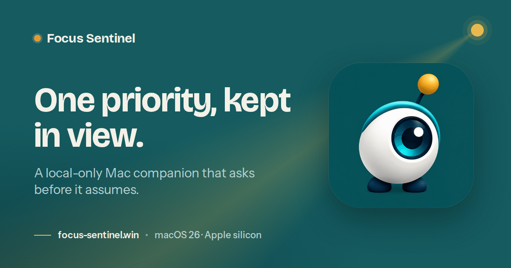

Short · 36 words
Focus Sentinel is a local-only Mac companion that keeps one priority in view, notices when work drifts, and asks before it assumes. It will be open source under the MIT licence and requires macOS 26 or later.
Press and media
Facts, wording and images for anyone writing about Focus Sentinel. Each fact here matches the app and its source.
Not yet released · follow the tracker

PlatformmacOS 26 or later
DataStays on the Mac
LicenceMIT, source published at release
Fact sheet
Boilerplate
Use either version as it stands, or trim it. Please keep the privacy sentences intact if you quote them.
Short · 36 words
Focus Sentinel is a local-only Mac companion that keeps one priority in view, notices when work drifts, and asks before it assumes. It will be open source under the MIT licence and requires macOS 26 or later.
Long · 149 words
Focus Sentinel is a macOS companion that keeps one priority in view. You write the priority as one sentence, start a session, timeboxed if you like, and Focus watches which app is in front. When the work drifts, its menu-bar mark changes; drift longer and a small panel names the app and offers a way back. When Focus cannot tell, it asks, and the answer becomes a rule, so it stops asking.
It blocks nothing and keeps no score. It stays quiet on calls, while an app is full screen, while you are away and in the quiet hours you set. Everything stays on the Mac: no account, no sync, no usage reports, and no network at all. Focus never connects to the internet and has no updater.
Focus Sentinel will be open source under the MIT licence and requires macOS 26 or later. It is made by Chris Mitchelmore.
On the name. Write Focus Sentinel in full the first time, then Focus. It is not yet released, so please do not describe it as available to download.
Assets

App screenshots are not published yet. They will follow the first release.
Privacy
Drawn from the app's own Privacy settings. The build gate checks the shipped binary for networking code on every run.
Which app is active: its name, never its windows. This version does not read which website a browser is showing.
Window titles, full web addresses, file paths, document names, or anything you type.
Focus never connects to the internet and has no updater. When a new version is out, people download it themselves.
No account, no sync, no usage reports. Export the record from the File menu; delete everything from Privacy settings.
Contact